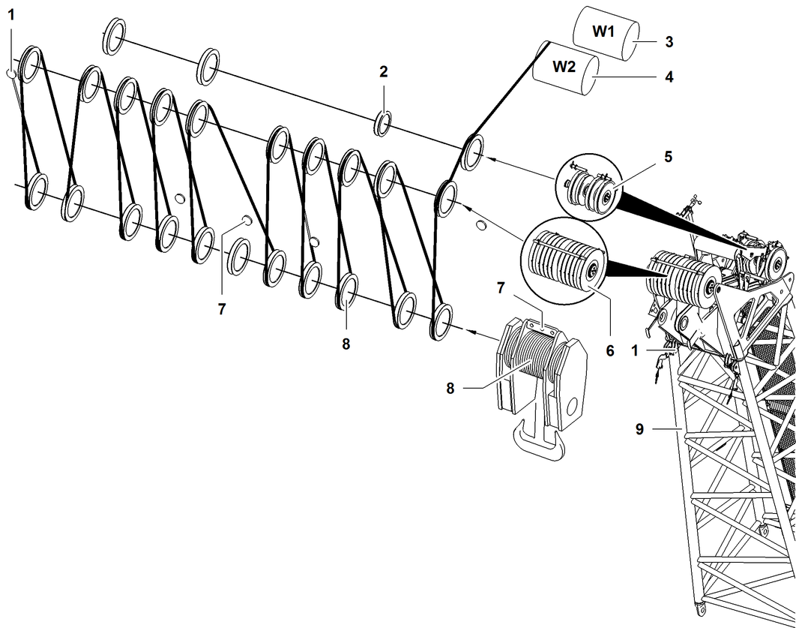

Einscherpläne für ein Seil über Hauptausleger-Kopf 2320 (Lastort 2)
Wenn bei angebautem Nadelausleger der Hauptausleger ebenfalls für Hübe eingesetzt wird, Hauptausleger-Kopf 2320 wie folgt einscheren.

Fig. 4980: Einscherpläne für ein Seil über Hauptausleger-Kopf 2320 (Lastort 2)
Fig. 4980: Einscherpläne für ein Seil über Hauptausleger-Kopf 2320 (Lastort 2)
Seilfixpunkt (2x) des Hauptausleger-Kopfs | |
Seilrolle für Seil der Nadelausleger-Verstellwinde | |
Winde1 | |
Winde2 | |
Nackenseilrolle (3x) des Hauptausleger-Kopfs | |
Seilrolle (10x) des Hauptausleger-Kopfs | |
Seilfixpunkte der Unterflasche | |
Seilrollenpaket der Unterflasche | |
Hauptausleger-Kopf |

GEFAHR
Unzulässige Anzahl der Einscherungen!
Versagen der Struktur, Kippen der Maschine.
Zulässige Anzahl der Einscherungen laut Traglasttabelle wählen. |
Einscherpläne für ein Seil über Hauptausleger-Kopf 2320 (Lastort 2) | |
|---|---|
20x | 19x |
18x | 17x |
16x | 15x |
14x | 13x |
12x | 11x |
10x | 9x |
8x | 7x |
6x | 5x |
4x | 3x |
2x | 1x |
Einscherpläne für ein Seil über Hauptausleger-Kopf 2320 (Lastort 2)